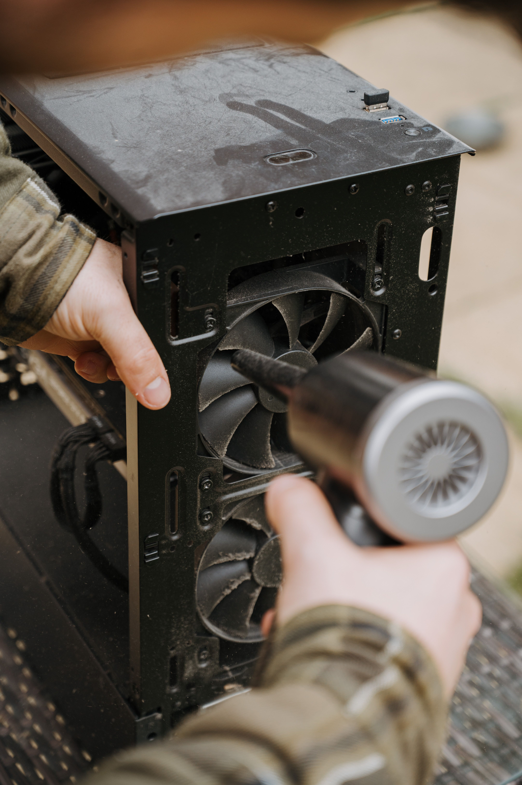
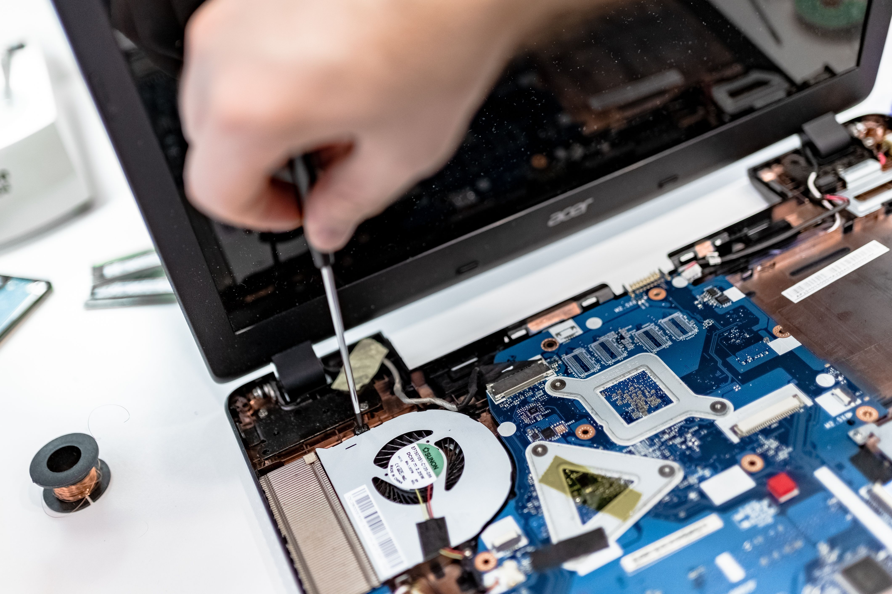

Reparación de PC
Diagnóstico y solución de problemas de hardware y software.
Solucionamos problemas de computadoras, notebooks, consolas y periféricos. Realizamos mantenimiento, limpieza, instalación de sistemas y reparación de componentes.
Solicitar presupuesto
Diagnóstico y solución de problemas de hardware y software.

Limpieza interna, cambio de pasta térmica y mantenimiento general.

Reparación y mantenimiento de notebooks, joysticks y otros periféricos.
Ofrecemos atención personalizada, diagnóstico del problema y presupuestos claros antes de realizar cualquier trabajo.
Trabajamos para que tu equipo vuelva a funcionar correctamente y puedas utilizarlo sin complicaciones.
Contanos qué problema tiene tu equipo y te ayudaremos a encontrar una solución.
Ir a contacto